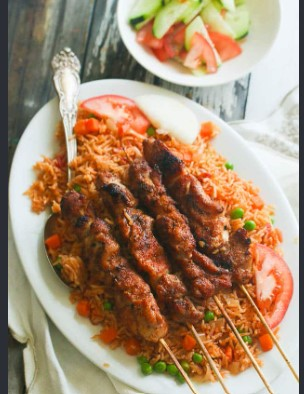

Chicken Suya

Thin-sliced chicken rubbed with yaji, a peanut and chili spice mix, then grilled on skewers. A Hausa street-food classic.
Ingredients
- 600 g chicken breast, thinly sliced
- 0.5 cup roasted groundnut (peanut) powder
- 2 tsp ground ginger
- 2 tsp paprika
- 1 tsp cayenne pepper
- 1 tsp garlic powder
- 1 tsp onion powder
- 1 tsp salt
- 3 tbsp vegetable oil
- 1 red onion, sliced, to serve
Instructions
Step 1
Mix the groundnut powder, ginger, paprika, cayenne, garlic, onion powder and salt into the yaji spice.
Step 2
Coat the chicken with oil, then with most of the yaji. Marinate 2 hours.
Step 3
Thread the chicken onto skewers.
Step 4
Grill over high heat for 10 to 12 minutes, turning often, until cooked through and charred at the edges.
Step 5
Dust with the remaining yaji and serve with sliced onion, tomato and lime.
Video tutorial
Nutrition per serving
| Calories | 310 kcal |
|---|---|
| Carbohydrates | 6 g |
| Protein | 36 g |
| Fat | 15 g |